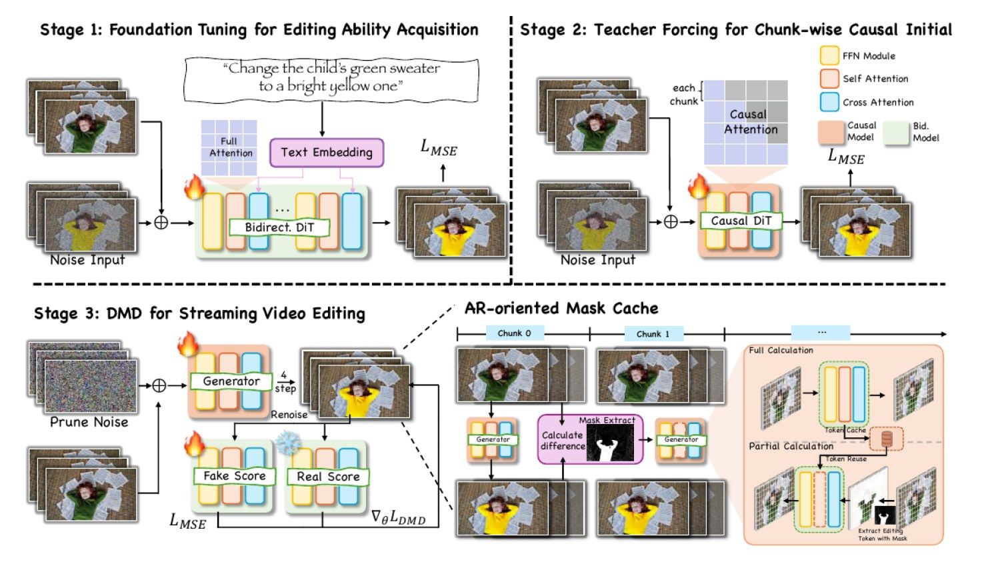

How do we edit a live video stream without drift, from a temporal denoising point of view?
What
Restyle a video as it arrives, chunk by chunk, for minutes at a time.
Why it is hard
An autoregressive video editor feeds its own error back in, so the picture drifts away from the scene. And the supervision it needs, paired video edits, is among the scarcest data in the field.
Our angle
Divide the task between two models, and recast the half that remains as temporal denoising and temporal reconstruction.
scroll
01 the demands, all at once
A streaming editor is asked for three things simultaneously.
The core problem: land one instruction on every frame as it arrives, and hold the frames in agreement with one another, for a stream of unbounded length.
02 how the field solves it today
Distil a video editor into a four step causal student.

LiveEdit, Figure 4 (arXiv 2606.26740). Stage 1 tunes a bidirectional video editor. Stage 2 applies teacher forcing to make it chunk wise causal. Stage 3 distils it into four steps with distribution matching, and a mask cache carries the speed.
It buys
Real time speed, and a genuinely causal editor.
It requires
Pairs of videos and their edited versions, before Stage 1 can even begin.
It keeps
The instruction inside the recurrent state, which is exactly where drift is born.
03 the supervision the whole route stands on
Editing an image is nearly free. Editing a video, at training scale, is the bottleneck.
Our recipe removes the dependency altogether. The training data is clean video plus the frozen image editor itself, so zero edited videos are collected, synthesised or filtered.
04 what happens once the stream runs long
Watch the drift.
source, forty secondsstreaming run onestreaming run two
A streaming editor across a forty second drive. The opening seconds look right. As the rollout advances, colour saturates, foliage smears across the buildings, and the geometry of the street loosens. Each run walks away from the scene in its own direction.
05 the limit of the state of the art
The instruction lands, and the scene leaves with it.
sourceLiveEdit, instruction: make it snowy
The style arrives, and a forest of invented trees arrives with it. The lake, the shoreline and the horizon of the source have been replaced rather than restyled.
sourceLiveEdit, instruction: apply a painting style
Here the face is repainted frame after frame, and the identity moves as the rollout advances. Structure that the source holds steady turns unstable inside the recurrence.
What the videos show
Editing strength and stability compete inside one model
When the causal editor pushes the instruction hard, it also invents and reshapes content, and its own memory carries that invention forward.
The question it raises
Which model should carry the instruction?
An image model already applies an instruction at full strength on a single frame, with structure intact. The difficulty appears only when a recurrent video model is asked to carry that instruction through time.
06 the diagnosis
Drift is the price of holding the instruction inside the recurrence.
Once the instruction is handled outside the recurrence, the video model inherits a much simpler assignment: it removes the frame to frame inconsistency and restores temporal continuity, and it leaves the content of each frame as the image editor delivered it.
07 what the division of the task delivers
One decomposition, three difficulties resolved together.
The third point deserves emphasis. Real time streaming is a difficulty in its own right, and the division answers it directly. The editor is stateless, so its frames are independent, which makes it batchable and freely distillable. The fixer is causal and carries a small fixed cost for each chunk. Latency and memory therefore stay constant however long the stream runs, and either half can be accelerated while the other stays untouched.
A per frame image editor on driving footage. Every car, sign, pole and wire holds its place, and the requested style arrives at full strength. What remains is temporal inconsistency between neighbouring frames, and removing it is the single job we give the video model.
09 the architecture, training above and inference below
Click any box for the model, the data, and the rule it follows.
source, the training answerreconstruction, the only thing we train ona real edit, met at test time
The middle panel is the entire training input: the frozen editor asked to reproduce a clean video, frame by frame, which returns a structure exact copy carrying genuine temporal inconsistency. The right panel is a real edit, which the fixer meets for the first time at test time. Training sees the middle panel and the source, and the right panel appears for the first time at test time.
10 insight one, what the fixer is trained to remove
The target is structural temporal inconsistency, and the reconstruction prompt is how we produce it.
A style instruction makes the image editor reinterpret structure on every frame, and that is the corruption the fixer has to undo. We reproduce it on clean video by loosening the reconstruction prompt: a spare instruction such as reconstruct the same image leaves the editor free to redraw detail, while a heavily constrained instruction yields only mild cosmetic variation. The seed adjusts the surface, and the prompt reaches the layer that matters.
The lever
The looseness of the reconstruction prompt
It sets how far the editor may reinterpret a clean video, and therefore how closely the training corruption resembles what a real edit leaves behind.
Being measured now
A signature comparison
Frame differences are separated into an appearance component and a structural component, across reconstruction prompts of varying looseness and a real edit, and the training regime is chosen to match the structural signature of the edit.
11 insight two, the editing ability arrives for free
We train on ground truth alone. Editing stays out of the training signal.
Stylised outputs inform the choice of training regime, and they stay out of the training signal. Watching how a real edit behaves tells us which reconstruction prompts to write, which clips to gather and which sampling protocol to fix. The gradient that reaches the fixer comes from clean video and its own reconstruction, and from nothing else.
What we calibrate
The training regime
Reconstruction prompts, the corpus, the sampling protocol and the magnitude of the corruption we present. All of it is set on clean video, and all of it stays upstream of the loss.
What arrives for free
The editing ability
Any instruction the frozen editor can follow becomes a video edit, with the same weights and with no further training. Editing supervision is absent from the recipe by construction.
12 where it stands
The temporal gap has closed most of the way.
Temporal inconsistency, end to end, on the main benchmark. On a second benchmark, held out entirely, it moves from 39.1 to 12.6.
Temporal
Smoothness 0.979 beside 0.993, subject consistency 0.918 beside 0.983, and we keep more motion: 0.375 against 0.25.
Cost
Zero edited videos, very few denoising steps, and a free swap of the front editor.
Their edge
Per frame sharpness, 0.565 against 0.714, carried by our editor. It is a front end lever, and we say so.
13 the plan
Five stages, and the paths that open out of each one.
Each stage carries an acceptance test, and each test has a prepared response for every way it can turn out. The tree below opens the full detail.